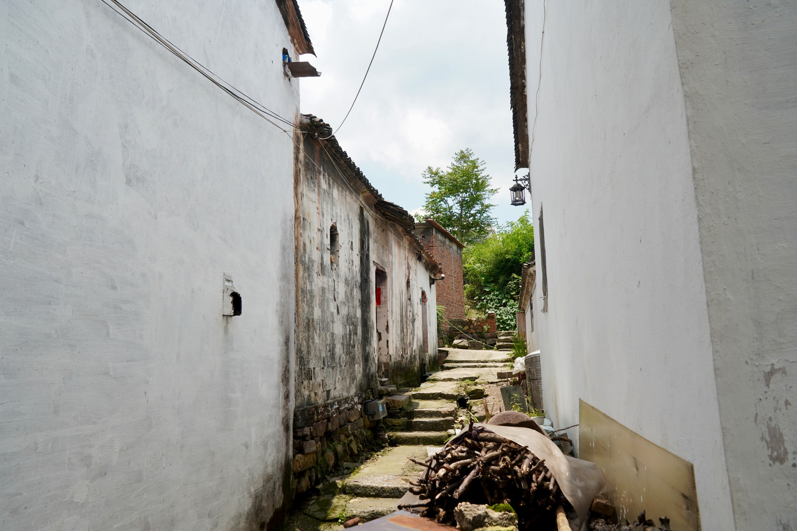
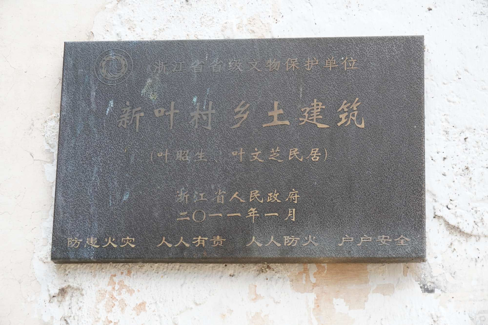
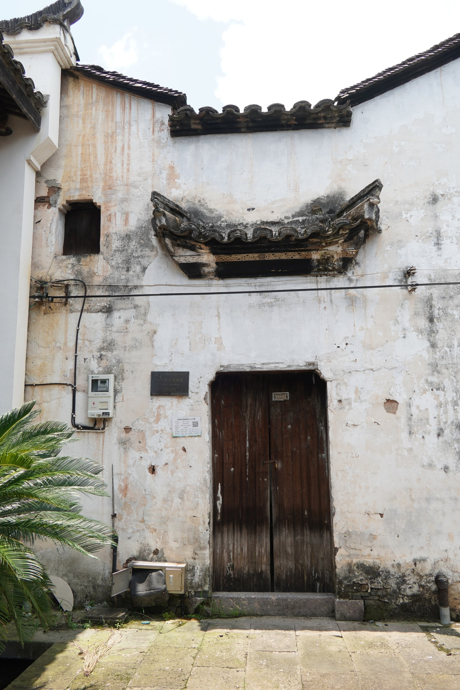

省保传统民居
从周边走向一处入口叶昭生、叶文芝民居
叶昭生、叶文芝民居是省级文物保护单位“新叶村乡土建筑”的组成部分。周边环境、正面入口与侧廊相互连接，形成由外向内的行走层次。
01
先看住宅与周边

从稍远处接近，住宅与邻近屋舍、通行空间一同出现。建筑顺着聚落肌理安置，也与周围老宅保持着紧密联系。
02
再回到正面入口

走到正面，注意力收拢到入口。由这里转入侧廊，外部巷道的开敞逐渐变为宅内较为幽静的空间。

叶昭生、叶文芝民居是省级文物保护单位“新叶村乡土建筑”的组成部分。周边环境、正面入口与侧廊相互连接，形成由外向内的行走层次。

从稍远处接近，住宅与邻近屋舍、通行空间一同出现。建筑顺着聚落肌理安置，也与周围老宅保持着紧密联系。

走到正面，注意力收拢到入口。由这里转入侧廊，外部巷道的开敞逐渐变为宅内较为幽静的空间。